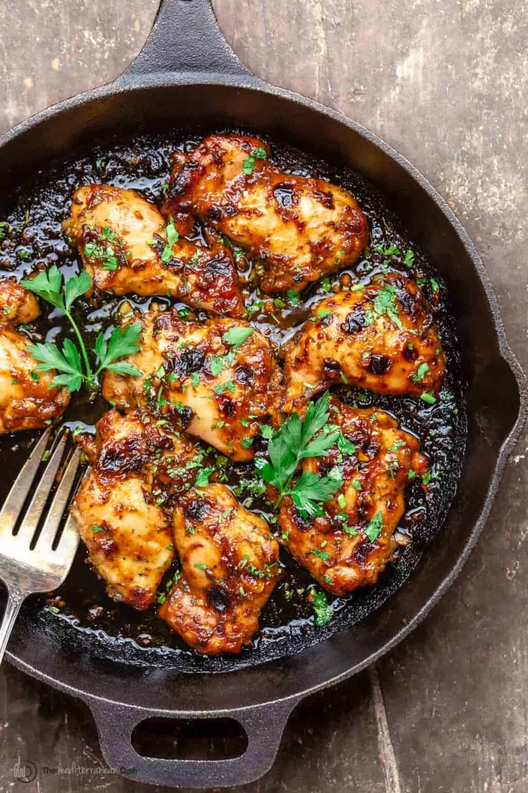

Balsamic Chicken

Description
"The tastiest chicken I've ever had." Me, 2022
Garlicy, balsamicy, chickeny, and ready in half an hour.
Ingredients
- Chicken Thighs
- Olive Oil
- Balsamic Vinegar
- Tinned Tomatos
- Fresh Garlic
- Red Onions
- Sweet Peppers
- Oregano
- Water
- Salt
- Pepper
Steps
- Chop the red onion, sweet peppers, and fresh garlic.
- Fry the red onion in a little olive oil in the pan over a low heat until soft and slightly golden.
- Add the sweet peppers and fry for a couple of minutes. Add more olive oil if necessary.
- Add a table spoon of balsamic vinegar.
- Add the chicken thighs to the pan and increase to a medium heat. Fry until the skin begins to brown.
- Add another table spoon of balsamic vinegar.
- Add the fresh garlic and cook for a minute or two. Don't burn it! Add more olive oil if necessary.
- Add the oregano to the top of the mixture.
- Add the tinned Tomatos and turn down the heat.
- Add the water and leave it to reduce. Stir occasionally.
- Add more balsamic vinegar, and salt and pepper to taste.